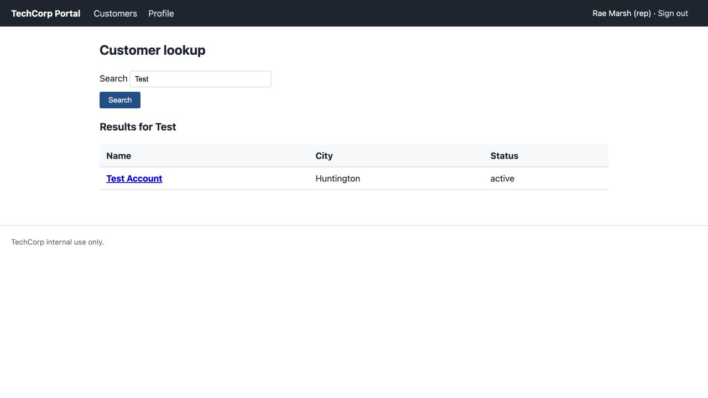

The search page treats a stored customer name as HTML: <b>Test Account</b> appears bold instead of displaying its angle brackets. Your job is to make the browser display customer data as text and refuse invalid search inputs. This practices input validation and output encoding under OWASP Top 10:2025 A05 Injection.
You will read, reproduce, fix, prove, and report. Module 3 adds two small decisions: choose an allow-list for names and identify the output expressions that need encoding. Setup, test inputs, and report prompts are supplied. Plan about two hours, with extra time for debugging if needed.
A representative reported the bold customer name and an error when searching for O'Brien. These are fictional supplied case facts. Your own evidence comes from the tests below.
Repair scope: fix HTML rendering and search-input validation in fixed/customer.php. The SQL query's handling of apostrophes is a separate flaw for the next module. Leave the query unchanged and record that limitation. Keep Module 2's fixed/router.php stopgap.
Download the accessible Word report template from this module’s Canvas assignment.
m03-tc-ir-002.docx.assignment.md and your changed code. Required screenshots can go inside the Word report; separate image uploads are needed only if you reference files that are not included in it.site, fixed, reports, and scripts.bash scripts/start.shrmarsh and password password. Check the port before testing. Read original files in site/; edit only fixed/.For startup help, use the Cloud Shell Guide. Test only your own portals under the Rules Of Engagement.
/customer.php. Press Enter. You should see Customer lookup and a Search box.Test in the Search box and click Search. Find the customer named Test Account. Its name should appear bold, without visible <b> tags.m03-before.png. Add the filename in report section 8's screenshot entry. Record what you actually see.<b> tags. This comparison shows that one page already handles the stored name safely.site/index.php in the editor. Search for display_name and find the expression using htmlspecialchars. Open site/customer.php and find the name inside the results link. In report section 5, explain the difference in one sentence.
Open full-size image (opens in a new tab)Reference screenshot from the local original portal: the stored name renders as bold text. After your repair, its literal angle brackets must be visible. Collect your own before-and-after evidence.
$_GET['q']. This is the search term arriving from the browser.| Find | What the destination does |
|---|---|
value="<?= $q ?>" | Puts the term into a quoted HTML attribute |
Results for <?= $q ?> | Puts the term into HTML text |
<?= $row['display_name'] ?> | Puts a stored name into HTML text |
customer.php?id=<?= $row['id'] ?> | Puts the record ID into a URL inside a quoted attribute |
$q = $_GET['q'] ?? ''; assignment (spacing may differ). Replace that input-handling statement with validation before page_header('Customers') and before any query or output uses $q. Keep $id handling and the query unchanged.mb_strlen with UTF-8 so accented letters count as characters.< and >. Anchor the whole input. The PHP companion explains Unicode letter classes and the UTF-8 modifier. Write your pattern and one sentence explaining it in report section 6.trim or measuring length. An address containing q[]=Test sends an array, not a string. Do not cast it to a string or let it produce a warning.$q or the stored display name. At each output, use htmlspecialchars with ENT_QUOTES | ENT_SUBSTITUTE and 'UTF-8'. The safe name output in site/index.php is a starting example; include both required flags in your repair.href quoted. Use the lecture's URL-versus-HTML explanation to justify the expression in your section-5 table. Do not modify the account query in this module.php -l fixed/customer.phpNo syntax errors detected in fixed/customer.php. If PHP names a line with an error, inspect that line and the line immediately before it, correct the syntax, save, and rerun. Paste the actual result into report section 7.Run these checks in the 8081 preview. Change only the path/query after the existing preview host; do not replace the Cloud Shell host with localhost. Record actual results in the supplied section-7 table.
/customer.php?q=Test. The result must show the literal name <b>Test Account</b> with visible angle brackets. Take m03-after.png. The stored name is still present; the browser must stop treating it as markup./customer.php?q=Brien. The result must include the name O'Brien with its apostrophe intact. This tests normal display without asking the still-vulnerable SQL query to parse an apostrophe in the search term./customer.php?q=. The lookup form should open normally without an error or a search. Open /customer.php as well to check a missing term./customer.php?q=aaaaaaaaaaaaaaaaaaaaaaaaaaaaaaaaaaaaaaaaa and press Enter. The resulting 41-character term must be refused with your generic message. Record both boundary outcomes./customer.php?q=%3Cb%3E. The encoded query value is <b>; it must be refused by validation. This is a separate check from the stored-name rendering test./customer.php?q[]=Test. It must be refused cleanly, without a PHP warning or stack trace./customer.php?q=%C3%A9. This sends é. It should pass validation; no matching rows is acceptable. Record the result to check your Unicode rule./customer.php?q=Test, and click a result's account link. Check that ordinary navigation still works.Test on the original 8080 copy and confirm it still shows the original bold rendering. Keep the original unchanged and keep your fix in fixed/.If a result differs, record it before correcting the code. Check the port, saved filename, validation order, and the output expression involved. Rerun the failed check and normal search after a correction.
Known limit: searching with a full apostrophe-containing term such as O'Brien still reaches the separate SQL flaw. Do not claim to have fixed it. Accepting an apostrophe in the validation rule does not make string-built SQL safe.
The Word template introduces selected TC-IR-01 sections without requiring the full organizational form. Use short answers and the supplied tables:
Submit your completed Word report. All changed-code requirements still apply; paste required screenshots into the report.
fixed/customer.php and choose Download. Paste the before-and-after screenshots into the Word report.assignment.mdm03-tc-ir-002.docxcustomer.php from fixed/fixed/; do not upload the database or the original source tree.Place screenshots in the Word report beside their prompts, with a caption and alt text. Keep written test results in the report too.
Submit these three parts together: assignment.md, your completed m03-tc-ir-002.docx, and your changed customer.php. Include any screenshots required above. Keep the [STUDENT] prompts in your report and write each answer directly below its prompt.
assignments, then module-03, and click assignment.md. This is the supplied task description. Leave it unchanged.assignment.md file and choose Download. You can also download assignment.md here.fixed/, as directed above.layout.php and index.php downloaded before restoration.assignment.md, your report, every required changed source file, and required images. Keep the lab instructions, your completed report, and your changed code together in the same submission.Open notes and open book are both fine. Respond in your own words; do not copy from other sources.
AI use on this assignment. The syllabus policy governs; these are its terms for an incident report and fix.
You must be able to explain every line you submit, on request. Undisclosed AI use is handled as academic dishonesty under the syllabus.
Use the shared Assignment rubric. The activity-specific evidence and source-file requirements are listed above.
Read report section 4 Business impact and risk, including TechCorp’s initial ratings and risk matrix. Complete the [STUDENT] entry: confirm or revise Impact and Likelihood as Low, Medium, or High, give a short reason for each, and explain how the control helps. Use the clearly labeled EXAMPLE as a model and write your own answer below it. Module 1 assesses the reliability of the setup and comparison process; it does not ask you to discover a vulnerability or claim customer-data exposure. Keep answers brief.